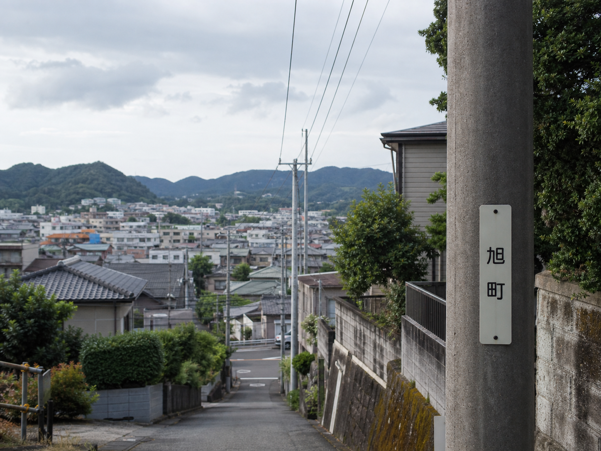

引っ越しの報告
新しい場所に着きました。荷物はまだ箱のままですが、カナに到着の連絡もできました。
前に一度、小旅行で来たことがあって、そのときに静かで良い街だと思っていました。駅前から少し離れると人通りも落ち着き、坂の上から街を見渡せます。
ここでは、景色だけ載せておきます。表のSNSやブログには、引っ越したことも場所も書きません。

坂の途中から。落ち着いたら、またゆっくり歩きたい。
前に来たときの記録も、たしか「ひとりごと」のほうに残してあります。あのときは、ここへ住むことになるなんて思っていませんでした。
無事に着いてよかった。写真はここだけにして、しばらくは位置情報も切っておこう。今夜また連絡するね。